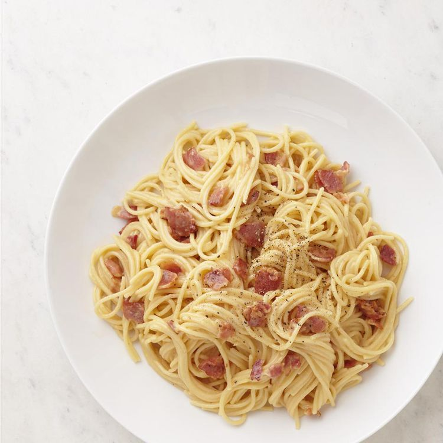

Home
Spaghetti Carbonara

Description
This is a favorite supper dish that's quick and easy to make. I double it for our family of 4 growing boys. We
serve it all up and then add on the goodies that are left in the bottom of the bowl - there's always bacon and
eggs left down there.
Ingredients
- 1 pound spaghetti
- 1 pound bacon, chopped
- 4 eggs, well beaten
- 1 cup grated Parmesan cheese
- ¼ cup olive oil
Steps
- Bring a large pot of lightly salted water to a boil. Add pasta and cook for 8 to 10 minutes or until al
dente; drain.
- Meanwhile, place bacon in a large, deep skillet. Cook over medium high heat until evenly brown. Drain,
reserving some of the drippings, crumble and set aside.
- Scramble eggs in bacon drippings.
- Place spaghetti in a large bowl. Pour in olive oil, and mix well; use enough to just moisten spaghetti. Stir
in bacon, eggs, and Parmesan cheese. Serve immediately.